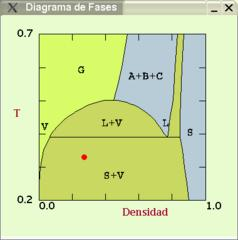

Mezclas
de tres
componentes
EXPERIMENTO
1: Cinética de la separación
de fases
- Objetivo
En este experimento se visualizará la "rapidez" con la que una
mezcla (homogénea) de tres componentes se separa en tres fases
condensadas (cada una con una de las especies como componente
mayoritario) al introducir potenciales que favorecen la
atracción entre partículas del mismo tipo. Para ello se
realizarán tres experimentos a una misma temperatura y tres
densidades diferentes. La primera densidad corresponderá a un
fluido, la segunda a un sólido próximo a las condiciones
de fusión y la tercera a un sólido a alta presión
(alta densidad).
- Procedimiento
- Seleccione en el menú Tipo de Simulación la
opción Mezcla Ternaria
- Seleccione una temperatura y una densidad intermedias
- Active, si es necesario, la opción Diagrama de Fases
en el menú Control del Sistema, y ajuste la
temperatura y la densidad a la zona del diagrama donde el fluido se
segrega en tres fases (zona etiquetada como A+B+C, por ejemplo
T~0.55, y densidad en el intervalo (0.50,0.80)

- Observe el diagrama de fases:
- El diagrama corresponde a los valores de alcance del
potencial, Rc = 2.50, para las interacciones entre particulas del
mismo tipo y Rc=1.12 para pares de partículas de especies
diferentes
- Las zonas en gris representan condiciones de
temperatura y densidad para las que una mezcla equimolecular se separa
en tres fases, todas ellas con la misma densidad pero cada una de ellas
conteniendo mayoritariamente partículas de una de las especies
- Asegúrese, utilizando la opción
Interacciones del menú Sistema , de que el alcance del
potencial corresponde a los valores 2.50 para las interacciones "puras"
y 1.12 para las interacciones "mixtas"
- Simulación
- Arranque la simulación pulsando la opción
Inicio en el Menú de Control
- Observe como las partículas de cada tipo (color)
tienden a agruparse. Si la densidad no es muy elevada puede
alcanzarse la separación del sistema en tres agregados, cada
uno de ellos constituido por partículas de un sólo
tipo, en un tiempo razonable (tenga en cuenta la periodicidad del
sistema para establecer si se ha alcanzado tal situación)
- Pare, utilizando la tecla Pausa del Menú de Control, la
simulación, modifique la densidad, hasta un valor en la zona
de solido, próximo a la zona de coexistencia
sólido-fluido (densidad ~ 0.86-0.87)
- Arranque la nueva simulación pulsando la opción
Inicio en el Menú de Control
- Observe como en este caso la difusión de las
partículas es mucho más lenta y la separación de
las partículas en tres agregados se produciría en un
tiempo mucho mayor que en el caso anterior
- Despues de detener la simulación anterior, modifique
nuevamente la densidad hasta el valor máximo permitido
(densidad = 1.00) y arranque de nuevo la simulación. Observe
como en este caso las posiciones que las partículas alcanzan
después de unos pocos pasos de simulación no se alteran
apreciablemente (excepto por las vibraciones de la red cristalina)
durante largos tiempos de simulación
- Comentario cinético
- A pesar de estar favorecida termodinámicamente, la
separación de fases sólidas de nuestro ejemplo es
extremadamente lenta. Moraleja: Una transición viable
desde el punto de vista termodinámico puede no producirse por
razones cinéticas
Vuelta a
la página inicial